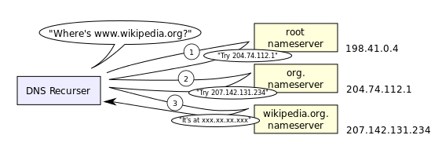
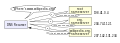

{kind=link}
File:An example of theoretical DNS recursion.svg
From Wikipedia, the free encyclopedia

{kind=link}
Size of this PNG preview of this SVG file: 563 × 200 pixels. Other resolutions: 320 × 114 pixels | 640 × 227 pixels | 800 × 284 pixels | 1,024 × 364 pixels | 1,280 × 455 pixels.
{kind=link}
{kind=link}
{kind=link}
{kind=link}
{kind=link}
{kind=link}
Original file (SVG file, nominally 563 × 200 pixels, file size: 16 KB)
| This is a file from the Wikimedia Commons. Information from its description page there is shown below. Commons is a freely licensed media file repository. You can help. |
Summary[edit]
{kind=link}
| Description |
English: A DNS resolver iteratively queries a root nameserver, org. nameserver, and wikipedia.org. nameserver in its quest to resolve the IP address associated with the domain name www.wikipedia.org.
|
| Date | |
| Source | Own work |
| Author | Lion Kimbro |
| Other versions |
|
{kind=link}
{kind=link}
Licensing[edit]
{kind=link}
| I, the copyright holder of this work, release this work into the public domain. This applies worldwide. In some countries this may not be legally possible; if so: I grant anyone the right to use this work for any purpose, without any conditions, unless such conditions are required by law.
|
File history
Click on a date/time to view the file as it appeared at that time.
| Date/Time | Thumbnail | Dimensions | User | Comment | |
|---|---|---|---|---|---|
| current | 03:39, 7 October 2014 |  | 563 × 200 (16 KB) | Wereldburger758 | Valid SVG now. |
| 05:07, 25 October 2005 | 563 × 200 (23 KB) | LionKimbro | A DNS resolver recursively queries a root nameserver, org. nameserver, and wikipedia.org. nameserver in it's quest to resolve the IP address associated with the domain name www.wikipedia.org. Created and placed into the public domain by myself, Lion Kimbr |
{kind=link}
File usage
The following pages on the English Wikipedia link to this file (pages on other projects are not listed):
Global file usage
The following other wikis use this file:
- Usage on af.wikipedia.org
- Usage on beta.wikiversity.org
- Usage on de.wikinews.org
- Usage on en.wikibooks.org
- Usage on en.wikiversity.org
- Usage on hi.wikipedia.org
- Usage on it.wikiversity.org
- Usage on pt.wikibooks.org
- Usage on pt.wikiversity.org
- Usage on ta.wikipedia.org
- Usage on te.wikipedia.org
- Usage on tr.wikipedia.org
{kind=link}
{kind=link}
{kind=link}
{kind=link}
{kind=link}
{kind=link}
{kind=link}